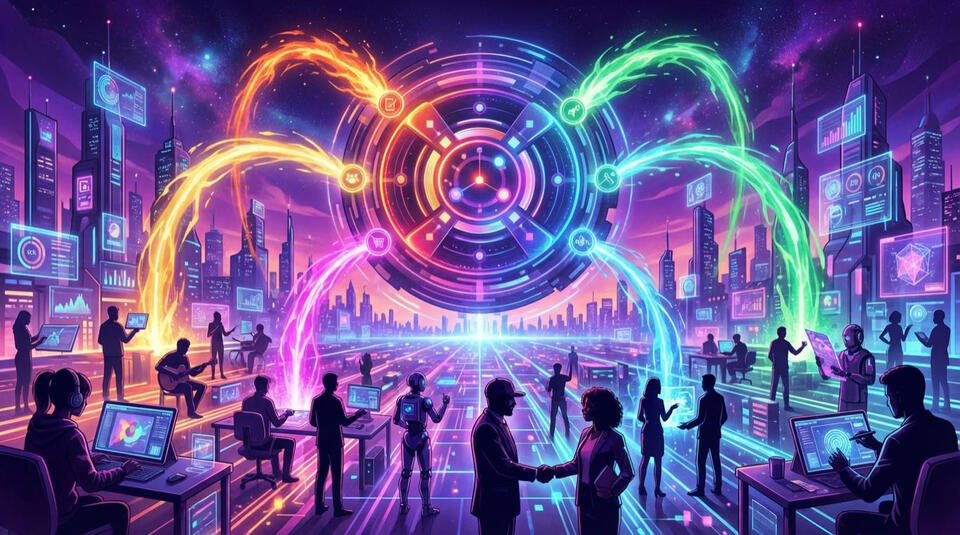
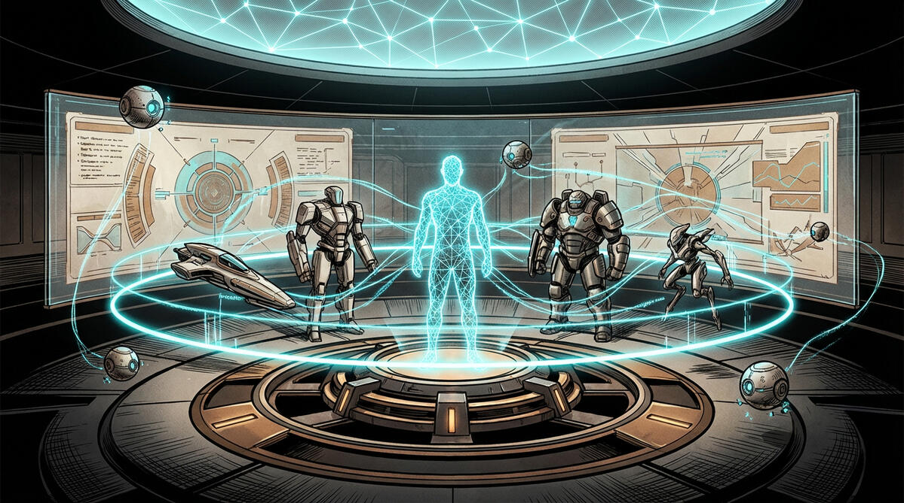
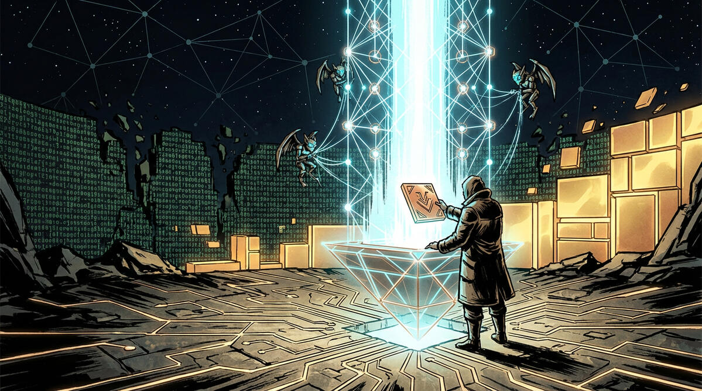
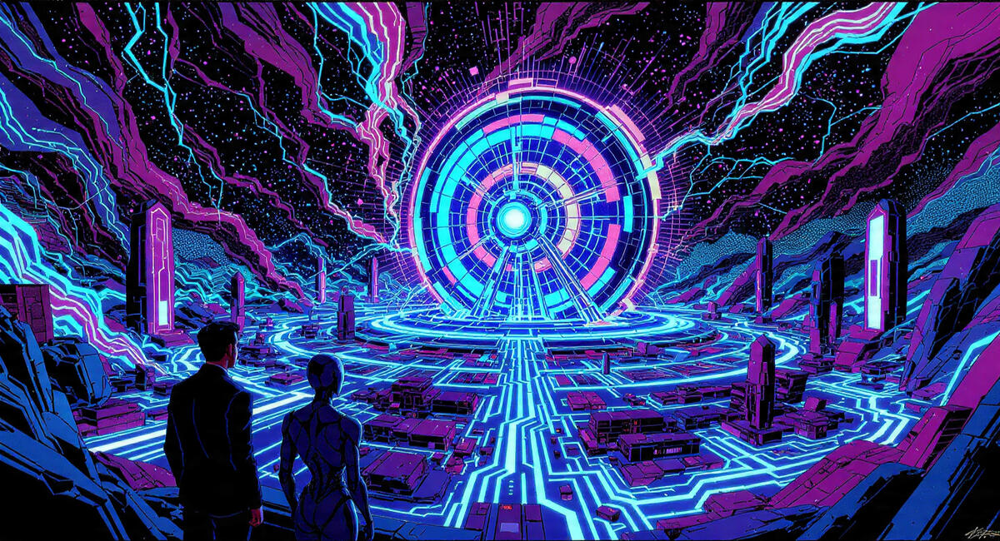
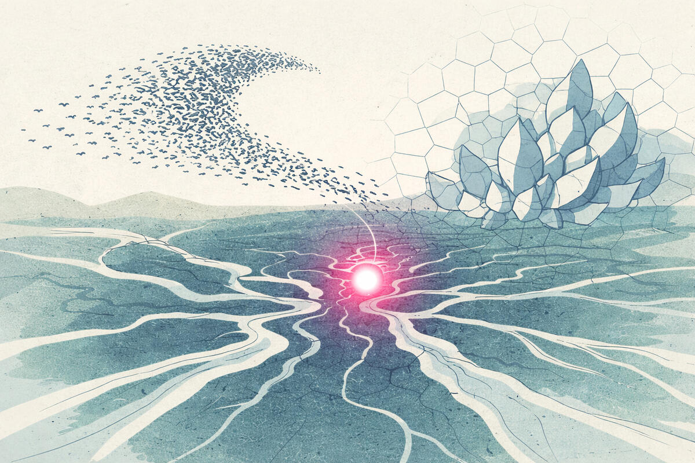
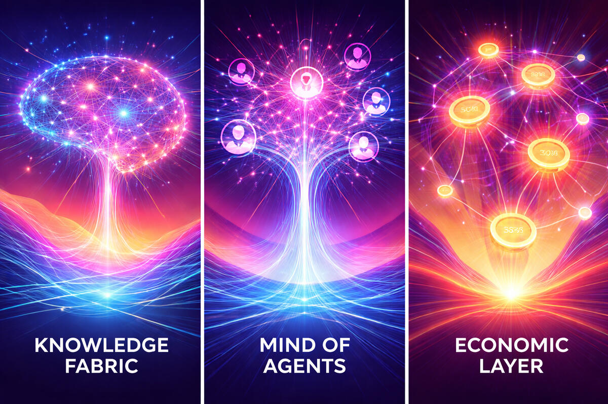

Blog
Intergraph Inside
Essays on context, trust, sovereignty and building regenerative economies in the Age of AI. #BuildTogether #BuildInPublic
The Missing Protocol of the Internet: Value Attribution

Building The Js as a Business Form, Not Just a Band

Intergraph: The Institutional Substrate for the Agentic Economy

Intergraph Economy Games and the Rise of Player Agents

The End of the Backend: How Intergraph Is Orchestrating the True Zero‑Code Revolution

From Internet Platforms to Sovereign Economies

From Infrastructure to Emergence: How the Agentic Economy Actually Begins
The Human-Centered Internet: Why We're Building Intergraph
